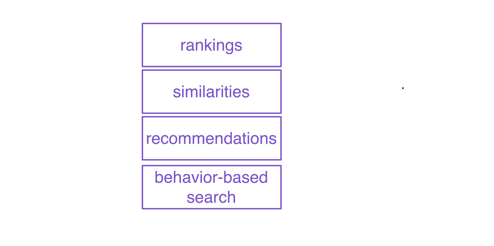
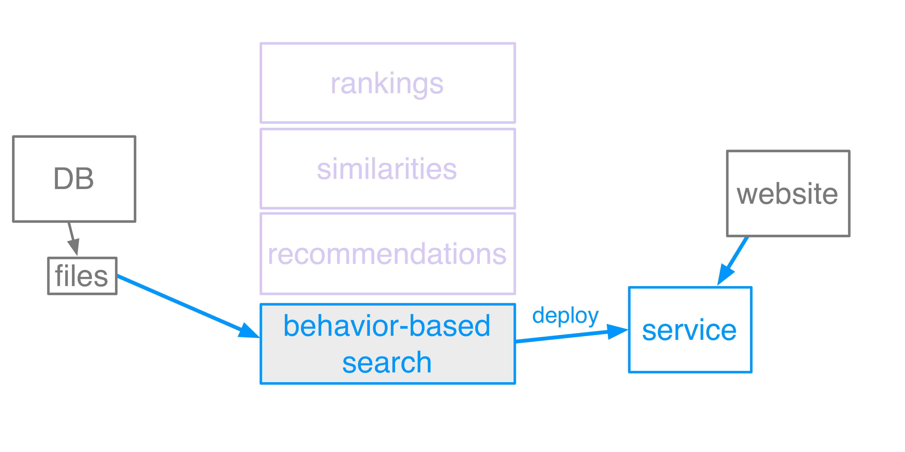
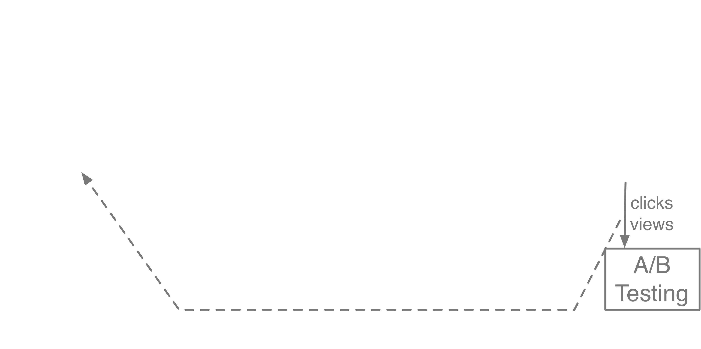
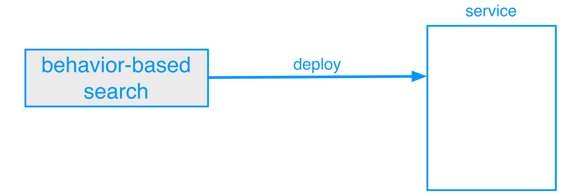
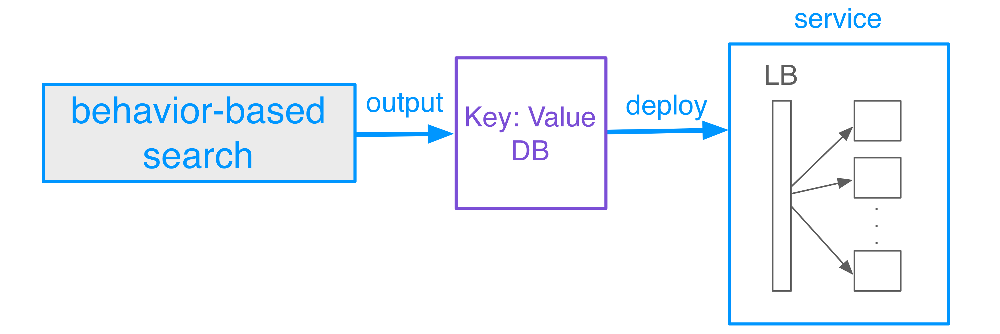
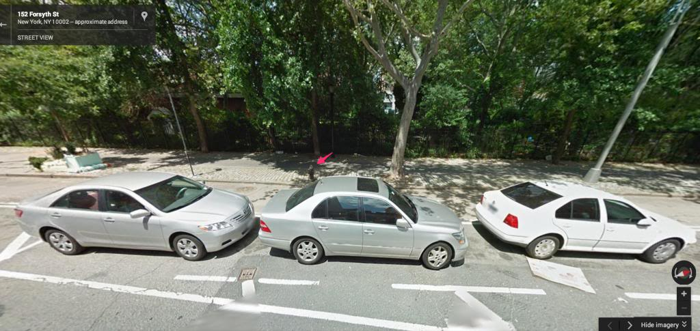

The Big Data Makeover
How things have changed over the last decade
Diana Pfeil, @dianam
Big Data 10 years ago



Choices, choices
via GIPHY
The invariant principles of big data engineering
DRY/Open it up
- make it generic
- communicate it with excellent documentation
- open it up to all
Back to the deployment process


- "machine learning": [Item1, Item2, Item3, ...]
- service.getValue()
- P13nFileBasedMappingService
via GIPHY

Source: http://iquantny.tumblr.com/post/83696310037/meet-the-fire-hydrant-that-unfairly-nets-nyc
Keep It Simple
- Try the most simple approach that will work
- Modularize: do one thing well
Avoid relational databases
- administrative hassle
- complexity
- performance
Just add a server
Measure Everything

What has Changed
- choice
- so much literature
- so much open source
- open data
- accessibility of big data to all
- data ethics

Failure modes for Northpointe recidivism model
|
white |
african-america |
| Labeled high risk, did not re-offend |
23% |
45% |
| Labeled low risk, did re-offend |
48% |
28% |
Source: https://www.propublica.org/article/machine-bias-risk-assessments-in-criminal-sentencing
Dangerous Model Territory
scale: significant impact on everyone's lives
unfair: illegal or unjust factors used in decision-making

opaque: model is not open or reviewable by those affected

no feedback loop: model does not course-correct

The future
- Technologies will continue to evolve at incredible speeds
- Devops will get easier and cheaper because serverless!
- Machine learning will still require thinking and domain expertise